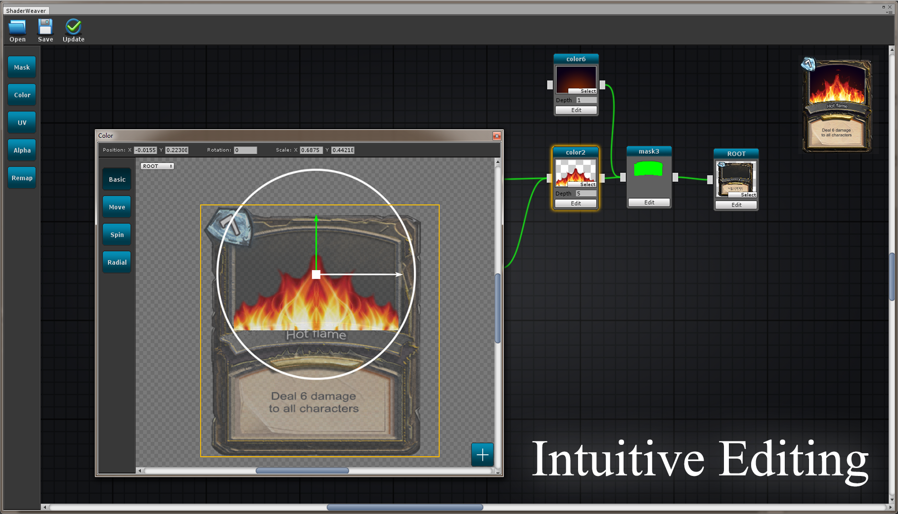
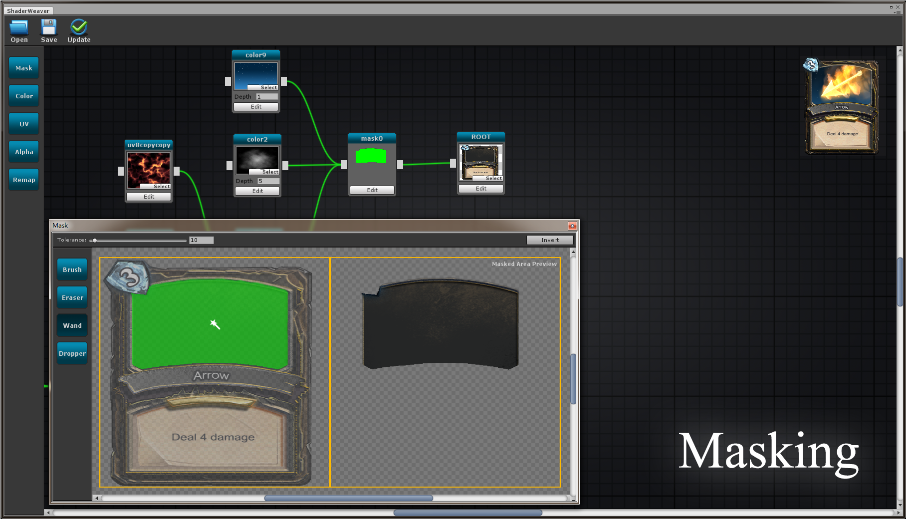
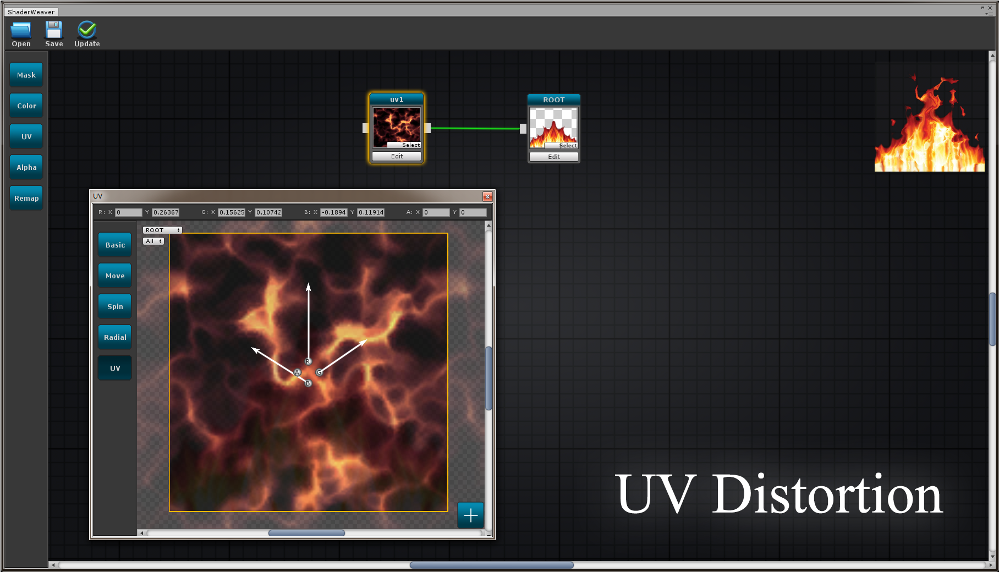
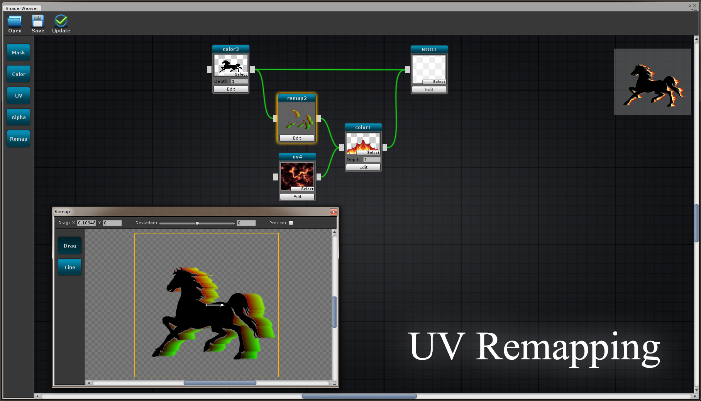
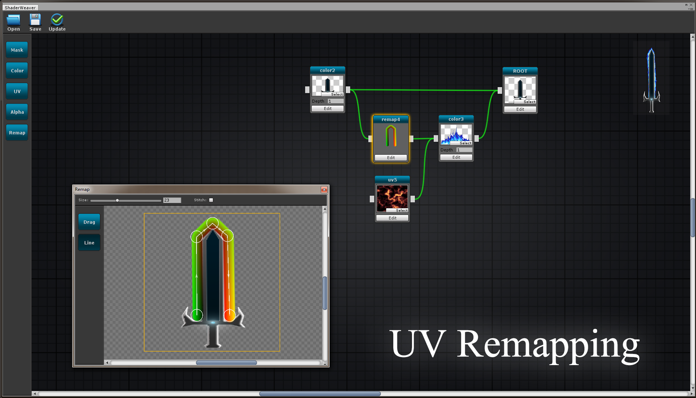
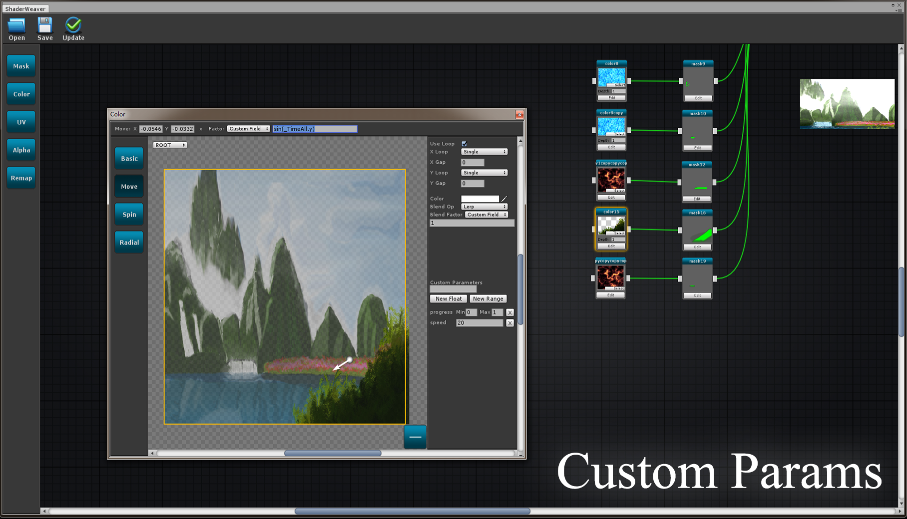
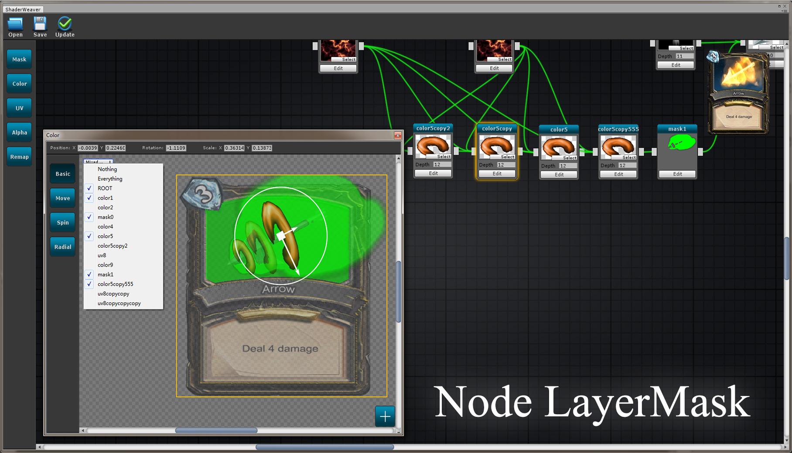
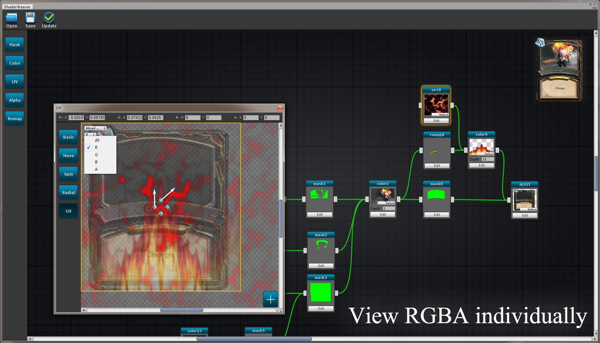
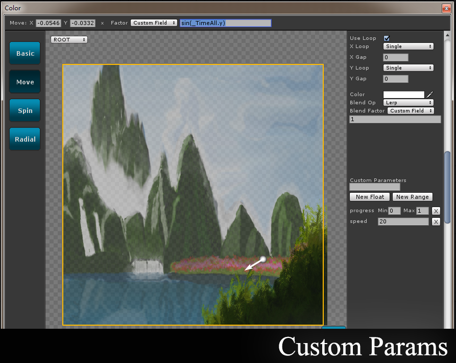

Shader Weaver is a node-based shader creation tool specializing in 2d/UI/Sprite effects,giving you the artistic freedom to enhance cards/icons/sprites in a visual and intuitive way.
Features
-Growing Samples
A pack of sample effects including shaders and textures to study and use freely.
-Intuitive interface
Clean and intuitive user interface.
-Mask Texture Creation
Draw masks to divide areas for individual sub-effects.
-UV Distortion
A visual way to distort uv corrdinates.
-UV Remapping
A unique way to make path along effects and object surrounding effects.
-Simple Operation
Use handles/gizmos like what you use to do.
-Preview
Nice width/height corresponding preview.
-Hot keys
Hot keys are avaliable when drawing masks,operate textures and so on.
-Play Mode
Edit and update in play mode.
-Copy Paste
Support copy(ctrl+c) and paste(ctrl+v) for reusing nodes from other Shader Weaver effect.
-Depth
Depth Sorting.
-Visual Modes
View textures' individual rgba channel and choose what to see by setting layers.









Shader Weaver © Jackie Lo
JackieLo@aliyun.com